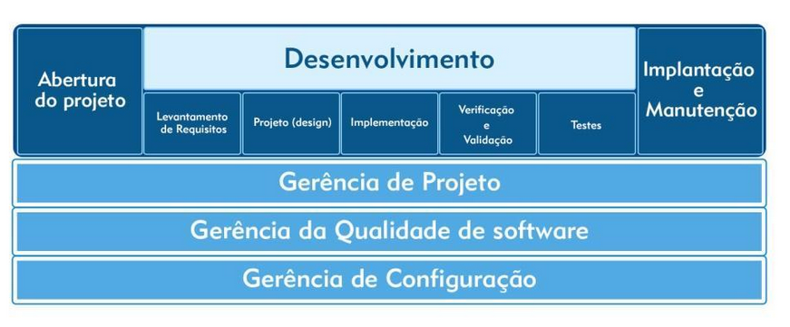
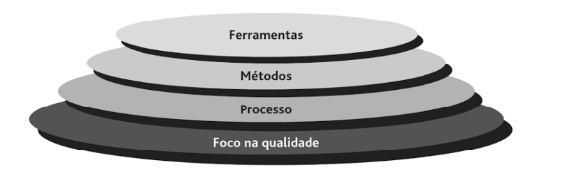
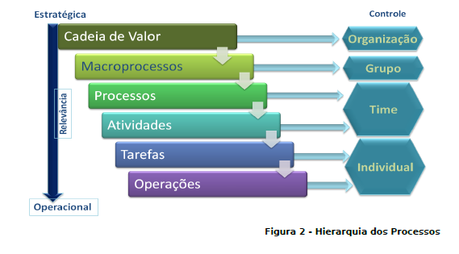

Processo de desenvolvimento de software:
Quando inciamos o desenvolvimento de software temos várias perguntas:
Quais são os atividades (processos) a serem realizados? Como organizar as atividades? (atividades principais e ordem de precedência) Quais são as melhores práticas(tarefas) de execução? Como montar uma equipe de desenvolvimento? Quais serão as ferramentas utilizadas?
Engenharia de software é uma área voltada à especificação, desenvolvimento, manutenção de sistemas de software, com a aplicação de tecnologias e práticas da Engenharia, Computação, Gerência de Projetos, desenvolvimento de software e outras disciplinas, visando organização, produtividade e qualidade.
A Engenharia de Software trata de aspectos relacionados ao estabelecimento de processos, métodos, técnicas, ferramentas e ambientes de suporte ao desenvolvimento de software.
Para que tenhamos qualidade durante a produção do software, a engenharia de software dividi o desenvolvimento de software em processos:
- Requisitos de Software (especificação)
- Design de Software (projeto)
- Construção do Software (Implementação)
- Teste de Sofware (Verificação e validação)
- Implantação (deploy)
- Manutenção de Software(evolução).

É importante relatar que a gerência de configuração, a gerência da qualidade de software e a gerência de projeto devem ser aplicadas a todas as etapas das atividades.
Um processo de desenvolvimento de software pode ser visto como um conjunto de atividades organizadas, usadas para definir, desenvolver, testar e manter um software. Dentro de cada processo vamos aprender que exite um conjunto de boas práticas de eficiência comprovada. As melhores práticas são um conjunto organizado e documentado de princípios, métodos e técnicas que aumentam a qualidade e a produtividade do desenvolvimento de software. As práticas são o que você deve fazer.
Segundo [Pressman 2016], à Engenharia de Software é uma tecnologia em 3 camadas: processos, métodos(práticas) e ferramentas e a base de todas as camadas é o foco na qualidade do software desenvolvido. Isso possibilita aos profissionais desenvolverem software de altíssima qualidade.

Processos: constituem um elo de ligação que mantém juntos os métodos e as ferramentas e possibilita o desenvolvimento racional e oportuno do software de computador.É o alicerce da engenharia de software.
Métodos: proporciona os detalhes de "como fazer" para construir o software;
Ferramentas: proporcionam apoio automatizado ou semi-automatizado aos métodos (ferramentas CASE combinan software, hardware e um banco de dados).

Para facilitar o entendimento de processos, vamos dar exemplo da construção de uma casa na engenharia civil:
- Levantamento de requisitos: Definição e análise dos requisitos da casa. Como queremos a casa ? Deve-se criar uma lista detalhada das especificações da casa.
- Projeto (Design): Elaborar e documentar o projeto da casa. Planta de uma casa, projeto arquitetônico, projeto de fundação, projeto estrutural, projeto hidro-sanitário (hidráulico e esgoto), projeto elétrico e telefônico. Identificação e projeto dos espaços e componentes (elementos) da casa.
- Construção (Implementação): Execução da obra, construção dos espaços e componentes (elementos) da casa. Também considerar água, esgoto e energia elétrica.
- Teste de cada espaço e componente (elemento) da casa. Também deve testar as instalações de água, esgoto e Energia elétrica. Integração de todos os espaços, componentes (elementos), água, esgoto e energia elétrica da casa. Teste dos serviços da casa.
- Entrega da casa e validação do uso funcional da casa por parte dos moradores.
- Manutenção da casa pelos moradores.
O engenheiro de software deve analisar o tamanho do problema a ser resolvido, verificar as restrições de desenvolvimento e dos rescurso disponivéis e adotar uma abordagem sistemática e organizada no seu trabalho, utilizando princípios, métodos, técnicas e ferrramentas
Dictionary
Bibliografia
PRESSMAN, R. S. Software engineering : a practitioner’s approach (9ª ed.). New York: Higher Education, 2016.